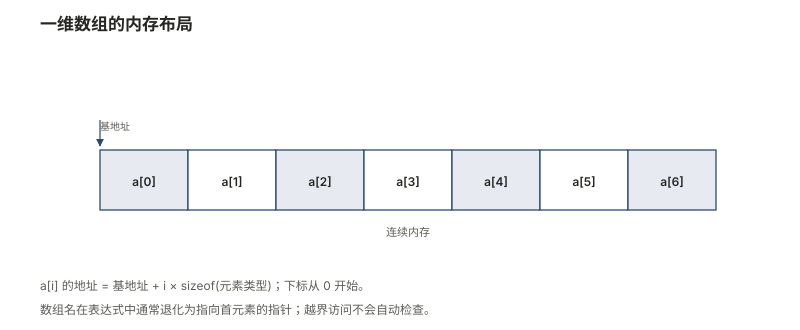

SOE105 · 第 7 章
数组基础
Arrays: Introduction
虚线下划线为术语；悬停查看中文、英文与释义，完整词典见“术语”。
本章目录
本讲引入数组：用一块连续内存存放同类型的多个元素，用下标访问其中任意一个；内容包括一维与多维数组的声明、内存布局、初始化、整表读写，以及“找最小值”这一经典数组算法的两版写法。
本章要点
- 数组是同一数据类型的元素的线性集合，用一块连续内存存放。
- 声明语法 element_type array_name[dimension]，维数必须是正的整型常量或常量表达式。
- 数组大小在创建后不能改变；声明时不会初始化元素。
- 下标从 0 开始，到 n−1 结束；下标错误是常见 bug。
- 二维数组本质是“数组的数组”，内存按行主序排列。
- 初始化列表的元素个数可以少于维数，未填的元素仍需先赋值再使用。
- 遍历数组的标准写法是 for (i = 0; i < n; i++)，上界用 < 而非 <=。
- 找最小值应把首元素作为初始候选，循环从下标 1 开始。
7.1 为什么需要数组
讲义的开篇问题很直接：读入一百个数，求平均值，再统计有多少个数高于平均值。如果不借助数组，程序必须在读入的同时决定“存哪儿”——一百个变量显然不现实；而要先算平均值、再回头比较，就必须把所有数保留下来。
数组array解决的正是这个问题：它是一个线性的数据元素集合，所有元素属于同一数据类型（例如一组整数、一组字符、一组实数）。讲义用“有许多抽屉的中药柜”和“邮局信箱”作类比——每个抽屉有编号，按编号取放；数组也一样，用一个名字代表整组，用下标定位其中一格。
数组的两项好处：给一个集合起一个名字；能引用其中任意一个元素。前者让代码表达“这一整组数据”，后者让循环遍历成为可能。
讲义列出三类典型应用：给出一组成绩求最大值与最小值（选择，selection）；读入学生姓名并按字母序重排（排序，sorting）；给出全班身高，输出高于平均身高的学生姓名（筛选，filtering）。这三类都要求“先保存、再处理”，因此都离不开数组。
L08b p.1–4
7.2 数组的声明
声明语法为 element_type array_name[dimension]。数组元素都是 element_type 类型的值；数组的大小（能存多少个值）由 dimension 给出。
关键限制：dimension 必须是正的整型常量或常量表达式。也就是说，数组的大小在创建后不能改变——它在编译时就被固定，运行时不能“长大”。这与后面要讲的动态内存分配形成对照。
数组可以有多维，语法为 element_type array_name[dim1][dim2]…[dimn]，其中每个 dimi 都是正整数。
讲义给出一维与二维的声明示例：int A[10]; 声明 10 个整数；int A[10][15]; 声明 10 行 15 列的整数。声明只是让编译器预留空间，并不写入任何值。
L08b p.7–9
7.3 一维数组与下标
int A[10]; 告诉编译器预留（allocate）一块连续内存来存 10 个整数，并把这块内存命名为 A。要访问单个元素，必须对 A 施加下标subscript：下标是方括号里的表达式，方括号里的值称为索引index。
索引从 0 开始，到 n−1 结束，n 是数组的维数dimension。因此 A[10] 的合法下标是 0 到 9，A[10] 本身就越界。A[0] = 3; 把 3 写入第一个元素。
讲义用一张内存图强调两件事：元素按下标依次排列，彼此相邻；元素在预留时不会被初始化（Elements are NOT initialized）。图中每个格子标着“未初始化”的符号，直到程序显式赋值。


绘图提示词
Clean vector memory layout diagram of a one-dimensional integer array A[10]: ten contiguous cells stacked vertically, labelled A[0] through A[9] with their index on the left, each cell marked uninitialized, and a bracket on the right indicating one consecutive block of memory named A. Flat 2D, thin 1.5 px strokes, muted slate blue and warm grey palette, white background, English labels, no cartoon, no gradient, no shadow.
“连续”这一点决定了数组的两个性质：可以用“首地址 + 下标 × 元素大小”直接算出任一元素的地址，所以访问是常数时间；也正因为连续，越界写入会踩到相邻的内存，后果不可预测。
L08b p.8
7.4 多维数组与行主序
多维数组本质上是“数组的数组”（an array of arrays）。int A[10][15]; 创建 10 行 15 列的数组，概念上像一张表格：行号 0–9，列号 0–14，元素记为 A[i][j]。
但它并不是“表格”存储在内存里，而是一维展开的：第一行 15 个元素先排完，接着第二行，依此类推。这种排布叫行主序row-major ordering。因此 A[1][0] 紧跟在 A[0][14] 之后，而不是“另起一行”。
与一维数组一样，多维数组在预留时也不会初始化任何元素。这一点在调试时很关键：打印出来的“随机值”不是编译器出错，而是那块内存里原本的残留数据。
Clean vector diagram showing a 10 by 15 two-dimensional array A[10][15] on the left as a grid with row and column indices, and on the right the same elements flattened into one continuous horizontal strip in row-major order, with arrows showing row 0 elements followed by row 1 elements and a label row-major ordering. Flat 2D, thin 1.5 px strokes, muted slate blue and warm grey palette, white background, English labels, no cartoon, no gradient, no shadow.
行主序解释了为什么“按行遍历”比“按列遍历”更缓存友好：按行访问时，内存地址是连续递增的。讲义没有展开性能讨论，但给出了排布事实，这就够判断地址顺序了。
L08b p.9
7.5 元素访问与下标表达式
下标不限于字面量，可以是变量，也可以是表达式。讲义给出一段需要逐步跟踪的代码：
int A[10], i = 7, j = 2, k = 4;
A[0] = 1;
A[i] = 5; // A[7] = 5
A[j] = A[i] + 3; // A[2] = 5 + 3 = 8
A[j+1] = A[i] + A[0]; // A[3] = 5 + 1 = 6
A[A[j]] = 12; // A[8] = 12
cout << A[k]; // A[4], input value 3逐行看：A[0] 得 1；A[7] 得 5；A[2] 取 A[7] 的值加 3 得 8；A[3] 取 A[7] 与 A[0] 之和得 6；最绕的是 A[A[j]]——先算内层 A[j]，此时 j = 2，A[2] = 8，于是外层变成 A[8] = 12。最后输出 A[4]，其值是运行时输入的 3。
这段代码说明两件事：下标表达式会先被求值，再用于定位；“嵌套下标”是从内向外算的。它也说明数组元素可以被读、被写、被当作另一个下标使用。
L08b p.11
7.6 数组初始化
用初始化列表可以在声明时给元素赋值：int A[10] = {9, 8, 7, 6, 5, 4, 3, 2, 1, 0};。只要元素个数不超过数组大小，声明就是合法的；少于大小也合法，未列出的元素保持未初始化，使用前仍需赋值。
int A[10] = {9, 8, 7, 6, 5, 4, 3, 2, 1, 0}; // valid
int A[10] = {7, 6, 5, 4, 3, 2, 1, 0}; // valid, last two uninitialized
int A[10] = {9, 8, 7, 6, 5, 4, 3, 2, 1, 0, -1, -2}; // invalid: too many“元素个数少于维数”这一点常被误解为“其余元素自动为 0”。讲义的处理是明确的：未填的元素仍然需要在使用前初始化。也就是说，初始化列表只负责它列出的那些位置。
正确的做法是：能一次给全就给全；给不全时，用循环把剩余元素显式赋值，或在遍历时只访问已赋值的下标范围（用 n 记录实际元素个数）。
L08b p.12
7.7 读入与输出一个列表
数组最常见的用法是“读入不定个数的数据，再统一处理”。讲义的标准写法用一个常量定容量、一个计数器记实际个数：
const int max_size = 1000;
int array[max_size];
int n = 0;
int current_input;
cout << "Enter a number (Press Ctrl-D to end): ";
while (n < max_size && cin >> current_input) {
array[n] = current_input;
n++;
cout << "Enter a number (Press Ctrl-D to end): ";
}
cout << "\nInputted list:" << endl;
for (int i = 0; i < n; i++) {
cout << array[i] << " ";
}
cout << endl;循环条件有两个子条件，顺序不能颠倒：n < max_size 先保证不越界，cin >> current_input 再保证读入成功。若把读入放在前面，一旦数组已满又读入成功，就会写到 array[max_size] 之外。
这正是上一章“短路求值”的实际用途：左边的边界检查为假时，右边的读入不会执行。输出时用 i < n 而不是 i < max_size，只打印真正读到的元素，避免输出一堆未初始化的垃圾值。
L08b p.14
7.8 找最小值：两版算法
问题：在一组整数中找最小值。输入是一组整数与一个表示个数的值；输出是最小值；约束是“找完之后列表保持不变”。
设计思路是“记录目前见过的最小候选”：用循环逐个考察元素，若当前元素比已记录的最小值更小，就更新记录；考察完所有元素后，记录值就是全局最小值。
第一版把“是不是第一个元素”的判断放进了循环：
for (i = 0; i < N; i++) {
if (i == 0) { // set to the first element
smallestValue = A[i];
} else {
if (A[i] < smallestValue)
smallestValue = A[i];
}
}它能工作，但 i == 0 这个测试要执行 N 次，而实际上只需要判断一次。改进版把初始化移到循环外，循环从下标 1 开始：
smallestValue = A[0]; // initial candidate outside the loop
for (i = 1; i < N; i++) {
if (A[i] < smallestValue) {
smallestValue = A[i];
}
}改进点有三处：初始候选在循环外设定；循环起点改为 1（首元素已作为候选，不必与自己比较）；循环体内只剩一次比较。功能不变，判断次数从 N 次降到 N−1 次，代码也更清楚。
L08b p.15–18
7.9 数组的常见错误
把本章的规则反过来读，就是一张错误清单。
- 下标越界：声明 int A[10] 却访问 A[10]。C/C++ 不做边界检查，越界写入会破坏相邻内存。
- 忘记下标从 0 开始：想存 10 个数却写成 for (i = 1; i <= 10; i++)，既漏掉 A[0]，又越界写 A[10]。
- 用变量作维数：int n = 10; int A[n]; 不是标准 C++ 的合法声明，维数必须是常量表达式。
- 假设元素已初始化：声明只预留空间，不写值；未赋值就读取，得到的是残留数据。
- 混淆容量与实际个数：遍历时用 max_size 而不是 n，会把未使用的槽位也打印或参与计算。
这些错误的共同点是“不会报错”：编译器不检查下标，运行时也不一定崩溃，程序只是给出错误结果。因此数组代码必须靠人工审查边界——每一处下标都要能说出它的取值范围。
L08b p.7–14